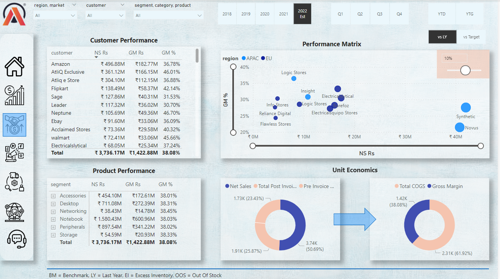

Sales View
1.In this view we have Customer and Product performance w.r.t Net Sales,Gross Margin,Gross Margin %.
2.We have Donut Charts showing
a.Net Sales, Total Post Invoice Deductions,Pre invoice deductions.
b.Gross Margin, Total Cost of Goods
3.There is a Scatter Chart Showing Region & Customers w.r.t Nets Sales, Gross Margin %
4.And we have also created a slider which helps to provide Region & Customers who are not meeting the Gross margin % targets

We have Tool Tip which shows Sales Trend over the years w.r.t Net Sales and Gross Margin %